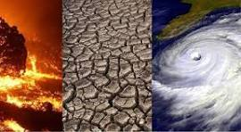

Los océanos son uno de los componentes más importantes del planeta, cubren el 71 % de la superficie terrestre, albergan una gran diversidad de especies y son esenciales para la supervivencia de la vida en la Tierra. Sin embargo, en las últimas décadas, estos ecosistemas se encuentran cada vez más amenazados por el cambio climático.
El cambio climático es un fenómeno global causado principalmente por la emisión excesiva de gases de efecto invernadero, como el dióxido de carbono, a la atmósfera.Estos gases atrapan el calor en la Tierra, provocando un aumento de la temperatura promedio del planeta.
A medida que la temperatura del océano aumenta, se producen una serie de efectos adversos en los ecosistemas marinos.
Uno de los efectos más preocupantes del cambio climático en los océanos es el blanqueamiento de los arrecifes de coral. Los corales son organismos sensibles que dependen de una relación simbiótica con algas llamadas zooxantelas. Cuando la temperatura del agua aumenta, los corales expulsan estas algas, lo que resulta en la decoloración y eventual muerte de los corales. Esto tiene un impacto devastador en los ecosistemas de arrecifes de coral, que son el hogar de una inmensa cantidad de especies marinas.
comunidadplanetaazul